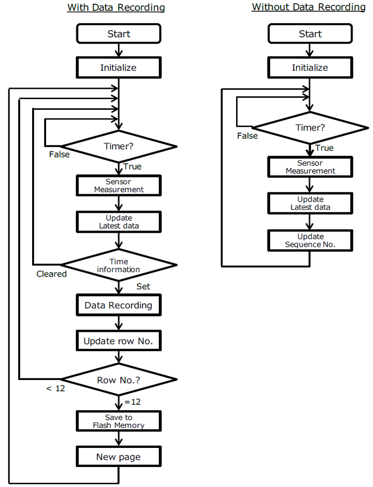
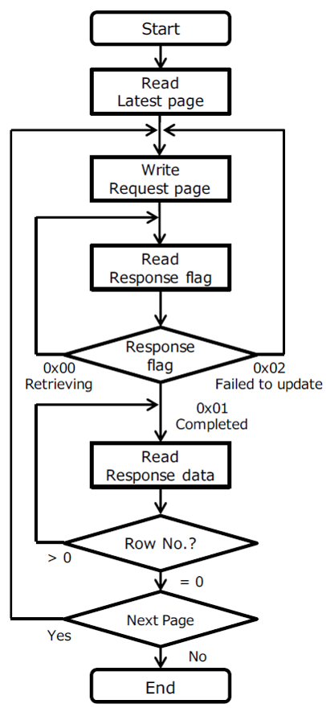
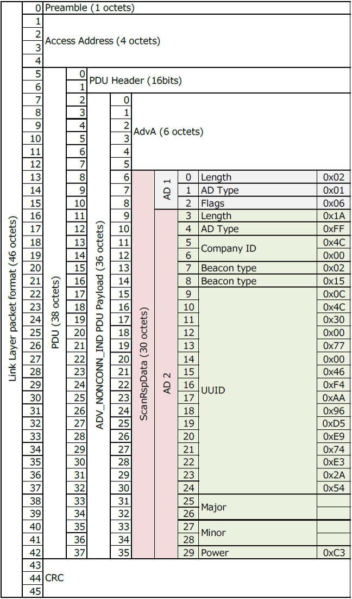
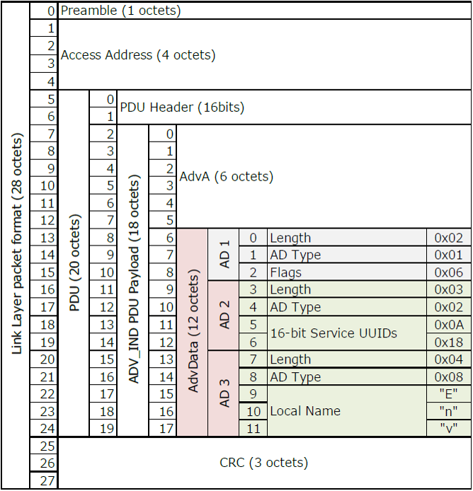
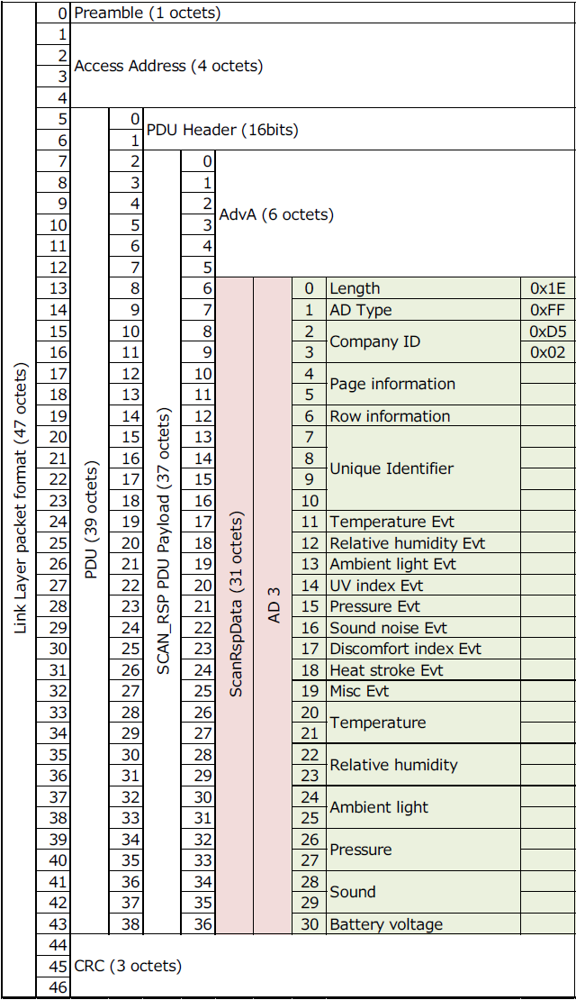
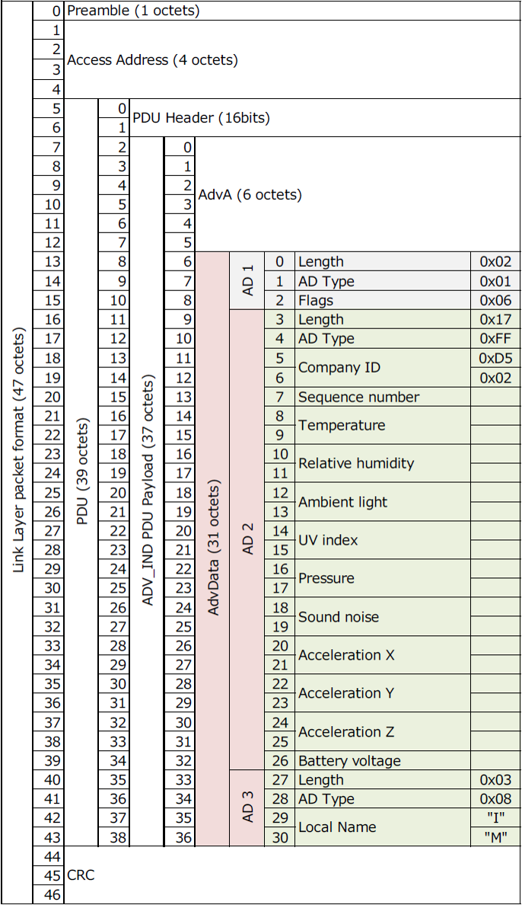
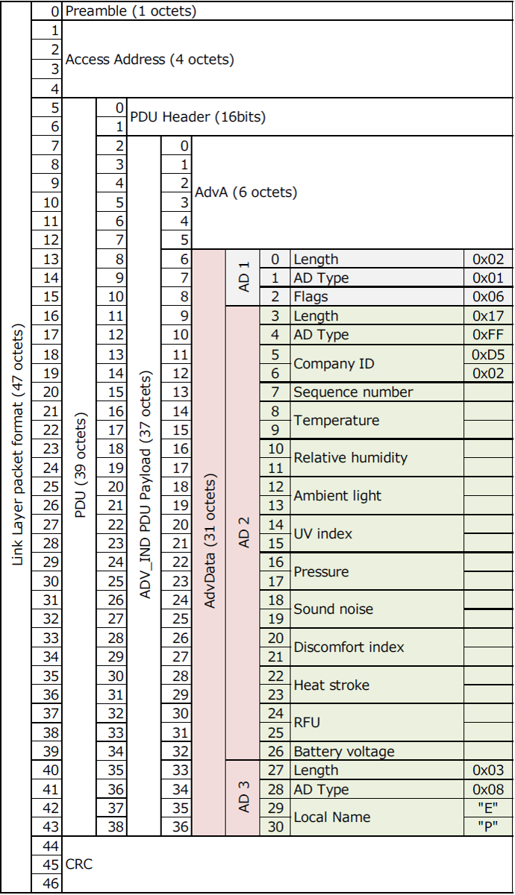

Environment Sensor : 2JCIE-BL01
Communication Interface Manual v1.3
1. Introduction
1.1. Scope
This Communication I/F Manual applies to Environment Sensor type 2JCIE-BL01.
1.2. Communication Interface
Environment sensor communicates with a smartphone, tablet, etc. via Bluetooth® low energy.
| GAP Role | |
|---|---|
| Environment Sensor | Peripheral |
| Smartphone, Tablet or others | Central |
1.3. Operation flow
According to set Beacon Mode, there are two operation patterns with and without measured data recording. The sensor data measurement and recording to flash memory are carried out regardless of whether they are connected or disconnected to/from the Central device. Further details of Beacon Mode are described in 3. Advertise format.
Figure 1. Operation flow
1.3.1 With Data Recording mode
The following Beacon Modes operate with data recording to the flash memory. To activate data recording, 2.3.1 Time Information must be set from the Central device first. Time information is cleared to zero (0) again when the Measurement Interval is changed, Beacon Mode is changed, battery is exchanged or power is reset. In these cases, it is necessary to set Time Information again to restart data recording．
| Beacon Mode | Name | Shortened Device Name | Device Name |
|---|---|---|---|
| 0x00 | Event Beacon (SCAN RSP) | Env | EnvSensor-BL01 |
| 0x01 | Standard Beacon | Env | EnvSensor-BL01 |
| 0x07 | Alternate Beacon | Env | EnvSensor-BL01 |
| 0x08 | Event Beacon (ADV) | Env | EnvSensor-BL01 |
1.3.2 Without Data Recording mode
Since the measured data is not recorded to the flash memory in the following Beacon Modes, only Latest Data is updated．
| Beacon Mode | Name | Shortened Device Name | Device Name |
|---|---|---|---|
| 0x02 | General Broadcaster 1 | IM | IM-BL01 |
| 0x03 | Limited Broadcaster 1 | IM | IM-BL01 |
| 0x04 | General Broadcaster 2 | EP | EP-BL01 |
| 0x05 | Limited Broadcaster 2 < | EP | EP-BL01 |
1.3.3 Flash memory for data recording
The flash memory consists of 2048 pages in total (from Page 0 to Page 2047), and the content of single page consists of UNIX TIME and 13 rows of measured data. The UNIX TIME indicates the measurement time at the first row of the page (Row 0), and from the first line onwards, it is possible to calculate the measurement time by adding the measurement interval to the UNIX TIME. When data is stored 13 times (from Row 0 to Row 12) in single page, a new page is created for the next measurement．
| Items | Contents | Remarks |
|---|---|---|
| UNIX TIME | 0x5685C180 (1451606400) | 2016/1/1 0:00:00 < |
| Measurement Interval | 0x12C (300sec) | 5 min. interval |
| Row 0 | Sensor data | 2016/1/1 0:00:00 |
| Row 1 | Sensor data | 2016/1/1 0:05:00 |
| Row 2 | Sensor data | 2016/1/1 0:10:00 |
| … | … | … |
| Row 12 | Sensor data | 2016/1/1 1:00:00 |
| Items | Contents | Remarks |
|---|---|---|
| UNIX TIME | 0x5685D0BC (1451610300) | 2016/1/1 1:05:00 |
| Measurement Interval | 0x12C (300sec) | 5 min. interval |
| Row 0 | Sensor data | 2016/1/1 1:05:00 |
| Row 1 | Sensor data | 2016/1/1 1:10:00 |
| … | … | … |
2. GATT Services
UUIDs of supported GATT services are shown below. Except public services defined by Bluetooth specification, full UUIDs of all the CUSTOM services and characteristics are based on the same Base UUID as follows．
| Service UUID | Service name | Number of Characteristics |
|---|---|---|
| 0x3000 | Sensor Service | 6 |
| 0x3010 | Setting Service | 9 |
| 0x3030 | Control Service | 4 |
| 0x3040 | Parameter Service | 2 |
| 0x3050 | DFU Service | 3 |
| 0x1800 (Public) | Generic Access Service | 3 |
| 0x1801 (Public) | Generic Attribute Service | 1 |
| 0x180A (Public) | Device Information Service | 5 |
2.1. Sensor Service (Service UUID: 0x3000)
Sensor Service is the service for the sensor data acquisition.
| Characteristics UUID | Characteristics | Properties | Byte | |||
|---|---|---|---|---|---|---|
| R | W | N | I | |||
| 0x3001 | Latest data | ✔ | ✔ | 19 | ||
| 0x3002 | Latest page | ✔ | 9 | |||
| 0x3003 | Request page | ✔ | ✔ | 3 | ||
| 0x3004 | Response flag | ✔ | 5 | |||
| 0x3005 | Response data | ✔ | 19 | |||
| 0x3006 | Event flag | ✔ | ✔ | 9 | ||
2.1.1 Latest data (Characteristics UUID: 0x3001)
Measured sensor data is updated every measurement interval and reflected in Latest data. The measurement interval can be changed in 2.2.1 Measurement interval.
In addition to regular update in set measurement interval, when sensor is disconnected from Central devices, the measurement is immediately carried out then the contents of this characteristics is updated. However, in case of immediate data measurement, this measured data is not saved to the memory and row number is not updated.
| Byte | Field | Format | Contents | |
|---|---|---|---|---|
| 0 | Row number / Sequence number | UInt8 | With Data Recording: Range：0 to 12 (*1)
Without Data Recording: Range：0 to 255 |
|
| 1 | Temperature | L | SInt16 | Unit：0.01 degC |
| 2 | H | |||
| 3 | Relative Humidity | L | SInt16 | Unit：0.01 %RH |
| 4 | H | |||
| 5 | Light | L | SInt16 | Unit：1 lx |
| 6 | H | |||
| 7 | UV Index | L | SInt16 | Unit：0.01 |
| 8 | H | |||
| 9 | Barometric Pressure | L | SInt16 | Unit：0.1 hPa |
| 10 | H | |||
| 11 | Sound noise | L | SInt16 | Unit：0.01 dB |
| 12 | H | |||
| 13 | Discomfort Index (*2) | L | SInt16 | Unit：0.01 |
| 14 | H | |||
| 15 | Heatstroke risk factor (*2) | L | SInt16 | Unit：0.01 degC |
| 16 | H | |||
| 17 | Battery voltage | L | UInt16 | Unit：1 mV |
| 18 | H | |||
(*1) In the operation with data recording mode, the value is always zero unless Time information is set.
(*2) Discomfort Index, Heatstroke risk factor（WBGT approximation）are calculated only by temperature and humidity. These information is just a rough indication and for referential use only.
2.1.2 Latest page (Characteristics UUID: 0x3002)
The Latest page shows the latest page and row information of the memory as the progress status of data recording. The Central device can acquire the past memory data by referring to the difference between the page information at the previous data retrieving and this latest page information． Table 9. Latest page format
| Byte | Field | Format | Contents | |
|---|---|---|---|---|
| 0 | UNIX TIME | 0 | UInt32 | Created time of the latest page.
Unit：1 sec Range：1970/1/1 0:00:01 to 2106/2/7 6:28:15 |
| 1 | 1 | |||
| 2 | 2 | |||
| 3 | 3 | |||
| 4 | Measurement interval | L | UInt16 | Unit：1 sec
Range：1 to 3600 sec |
| 5 | H | |||
| 6 | Latest page | L | UInt16 | Range：0 to 2047 |
| 7 | H | |||
| 8 | Latest row | UInt8 | Range：0 to 12 | |
2.1.3 Request page (Characteristics UUID: 0x3003)
Specify the page number to retrieve the measured data from the flash memory. The result of retrieving from the memory for the page specified in this Characteristic will be set in 2.1.4 Response flag and the past measured data will be set in 2.1.5 Response data.
| Byte | Field | Format | Contents | |
|---|---|---|---|---|
| 0 | Requesting Page No. | L | UInt16 | Range：0 to 2047 |
| 1 | H | |||
| 2 | Requesting Row No. | UInt8 | Range：0 to 12 | |
2.1.4 Response flag (Characteristics UUID: 0x3004)
When requesting page and row number is set in 2.1.3 Request page, 2.1.5 Response Data will be updated with retrieved measured data. Whether the update is successfully completed or not can be known by the Update flag of this Characteristic. In addition, updating of this Characteristic is done in the page basis, confirmation in the row basis is unnecessary.
| Byte | Field | Format | Contents | |
|---|---|---|---|---|
| 0 | Update flag | UInt8 | 0x00: Retrieving
0x01: Completed 0x02: Failed to retrieve data |
|
| 1 | UNIX TIME | 0 | UInt32 | Created time of this page.
Unit：1 sec Range：1970/1/1 0:00:01 to 2106/2/7 6:28:15 |
| 2 | 1 | |||
| 3 | 2 | |||
| 4 | 3 | |||
2.1.5 Response data (Characteristics UUID: 0x3005)
Retrieved memory data in the page and row specified in 2.1.3 Request page will be updated in this characteristic. Correct data acquisition can be made after the update flag becomes "Completed" in 2.1.5 Response flag. Also, by reading this Characteristic, the data of the next row in the same page is automatically set to this Characteristic (descending order Row 12 to Row 0). Therefore, it is unnecessary to specify 2.1.3 Request page for each row, and all row in the same page can be read by continuous Read of this Characteristic. However, since automatic retrieving across pages is not performed, when moving to the next page, it is necessary to specify the page number again to 2.1.3 Request page and confirm the 2.1.4 Response flag each time.
| Byte | Field | Format | Contents | |
|---|---|---|---|---|
| 0 | Row number | UInt8 | Range：0 to 12 | |
| 1 | Temperature | L | SInt16 | Unit：0.01 degC |
| 2 | H | |||
| 3 | Relative Humidity | L | SInt16 | Unit：0.01 %RH |
| 4 | H | |||
| 5 | Light | L | SInt16 | Unit：1 lx |
| 6 | H | |||
| 7 | UV Index | L | SInt16 | Unit：0.01 |
| 8 | H | |||
| 9 | Barometric Pressure | L | SInt16 | Unit：0.1 hPa |
| 10 | H | |||
| 11 | Sound noise | L | SInt16 | Unit：0.01 dB |
| 12 | H | |||
| 13 | Discomfort Index | L | SInt16 | Unit：0.01 |
| 14 | H | |||
| 15 | Heatstroke risk factor | L | SInt16 | Unit：0.01 degC |
| 16 | H | |||
| 17 | Battery voltage | L | UInt16 | Unit：1 mV |
| 18 | H | |||
Operation flow of data retrieving from flash memory is shown below.
Figure 2. Operation flow of data retrieving from flash memory
(*1) The information of the latest page can be acquire from 2.1.2 Latest page or the page information in advertisement data.
(*2) While the result of reading Response flag is 0x00: Retrieving, try reading Response flag until updating is completed.
(*3) If the result of reading Response flag is 0x02: Fail and updating is not completed after 3 times of retry, the data in the flash memory may be corrupted. In this case skip the corresponding page and obtain the data of the next page.
2.1.6 Event flag (Characteristics UUID: 0x3006)
The state of occurrence of various events is represented by a bit field for each sensor.
| Byte | Field | Format | Contents |
|---|---|---|---|
| 0 | Temperature | UInt8 | Bit 7-6 : RFU
Bit 5 : Simple threshold [lower limit] Bit 4 : Simple threshold [upper limit] Bit 3 : Changing trend [decline/term] Bit 2 : Changing trend [rise/term] Bit 1 : Changing trend [decline/previous] Bit 0 : Changing trend [rise/previous] |
| 1 | Relative Humidity | UInt8 | |
| 2 | Light | UInt8 | |
| 3 | UV Index | UInt8 | |
| 4 | Barometric Pressure | UInt8 | |
| 5 | Sound noise | UInt8 | |
| 6 | Discomfort Index | UInt8 | |
| 7 | Heatstroke risk factor | UInt8 | |
| 8 | Other events | UInt8 | Bit 7-1 : RFU
Bit 0 : Battery replacement |
* Simple threshold: The state where the latest acquisition data exceeds the set threshold.
* Changing trend:
| [term] | : The state in which there is at least one difference equal to or greater than set threshold between the latest data and the predetermined number of past data. |
| [previous] | : The stat in which the difference between the latest data and the previous data is equal to or greater than the set threshold. |
Figure 3. Event detection
2.2. Setting Service (Service UUID: 0x3010)
Read and Write the settings of each sensor.
| Characteristics UUID | Characteristics | Properties | Byte | |||
|---|---|---|---|---|---|---|
| R | W | N | I | |||
| 0x3011 | Measurement interval | ✔ | ✔ | 2 | ||
| 0x3013 | Temperature | ✔ | ✔ | 15 | ||
| 0x3014 | Relative humidity | ✔ | ✔ | 15 | ||
| 0x3015 | Ambient light | ✔ | ✔ | 15 | ||
| 0x3016 | UV Index | ✔ | ✔ | 15 | ||
| 0x3017 | Pressure | ✔ | ✔ | 15 | ||
| 0x3018 | Sound noise | ✔ | ✔ | 15 | ||
| 0x3019 | Discomfort index | ✔ | ✔ | 15 | ||
| 0x301A | Heat stroke | ✔ | ✔ | 15 | ||
2.2.1 Measurement interval (Characteristics UUID: 0x3011)
Specify measurement interval in seconds．（Common to all sensors） Time information is cleared to zero (0) when changing the measurement interval, so it is necessary to set the time again to start data recording.
| Byte | Field | Format | Contents | |
|---|---|---|---|---|
| 0 | Measurement interval | L | UInt16 | Unit：1 sec
Range：1 to 3600 sec Default：300 sec (0x012C) |
| 1 | H | |||
The possible recording period are shown in Table 16.
| Measurement interval | Recording period (hour) | Recording period (day) |
|---|---|---|
| 1 sec | 7.4 hour | 0.3 days |
| 10 sec | 74 hour | 3.0 days |
| 30 sec | 222 hour | 9.2 days |
| 60 sec | 444 hour | 18 days |
| 300 sec | 2219 hour | 92 days |
| 600 sec | 4437 hour | 185 days |
| 3600 sec | 26624 hour | 1109 days |
2.2.2 Temperature (Characteristics UUID: 0x3013)
Temperature sensor related event settings．
| Byte | Field | Format | Contents | |
|---|---|---|---|---|
| 0 | Event Enable/Disable | UInt8 | Bit 7-6 : RFU
Bit 5 : Simple threshold [lower limit] Bit 4 : Simple threshold [upper limit] Bit 3 : Changing trend [decline/term] Bit 2 : Changing trend [rise/term] Bit 1 : Changing trend [decline/previous] Bit 0 : Changing trend [rise/previous] Enable: 1, Disable: 0 Default：0x00 |
|
| 1 | Changing trend threshold [rise/previous] | L | SInt16 | Unit：0.01 degC
Range：0.01 to 30.00 degC Default：0x00C8 (2.00 degC) |
| 2 | H | |||
| 3 | Changing trend threshold [decline/previous] | L | ||
| 4 | H | |||
| 5 | Changing trend threshold [rise/term] | L | ||
| 6 | H | |||
| 7 | Changing trend threshold [decline/term] | L | ||
| 8 | H | |||
| 9 | Simple threshold [upper limit] | L | SInt16 | Unit：0.01 degC
Range：-10.00 to 60.00 degC Default：0x0DAC (35.00 degC) |
| 10 | H | |||
| 11 | Simple threshold [lower limit] | L | Unit：0.01 degC
Range：-10.00 to 60.00 degC Default：0x03E8 (10.00 degC) |
|
| 12 | H | |||
| 13 | Term for changing trend (Number of Measurements) | UInt8 | Unit：1 count
Range：1 to 8 count Default：0x06 (6 count) |
|
| 14 | Moving average number | UInt8 | Unit：1 count
Range：1 to 8 count Default：0x01 (1 count) |
|
2.2.3 Relative humidity (Characteristics UUID: 0x3014)
Humidity sensor related event settings．
| Byte | Field | Format | Contents | |
|---|---|---|---|---|
| 0 | Event Enable/Disable | UInt8 | Bit 7-6 : RFU
Bit 5 : Simple threshold [lower limit] Bit 4 : Simple threshold [upper limit] Bit 3 : Changing trend [decline/term] Bit 2 : Changing trend [rise/term] Bit 1 : Changing trend [decline/previous] Bit 0 : Changing trend [rise/previous] Enable: 1, Disable: 0 Default：0x00 |
|
| 1 | Changing trend threshold [rise/previous] | L | SInt16 | Unit：0.01 %RH
Range：0.01 to 50.00 %RH Default：0x01F (45.00 %RH) |
| 2 | H | |||
| 3 | Changing trend threshold [decline/previous] | L | ||
| 4 | H | |||
| 5 | Changing trend threshold [rise/term] | L | ||
| 6 | H | |||
| 7 | Changing trend threshold [decline/term] | L | ||
| 8 | H | |||
| 9 | Simple threshold [upper limit] | L | SInt16 | Unit：0.01 %RH
Range：0.00 to 100.00 %RH Default：0x1F40 (80.00 %RH) |
| 10 | H | |||
| 11 | Simple threshold [lower limit] | L | Unit：0.01 %RH
Range：0.00 to 100.00 %RH Default：0x0DAC (35.00 %RH) |
|
| 12 | H | |||
| 13 | Term for changing trend (Number of Measurements) | UInt8 | Unit：1 count
Range：1 to 8 count Default：0x06 (6 count) |
|
| 14 | Moving average number | UInt8 | Unit：1 count
Range：1 to 8 count Default：0x01 (1 count) |
|
2.2.4 Ambient light (Characteristics UUID: 0x3015)
Light sensor related event settings．
| Byte | Field | Format | Contents | |
|---|---|---|---|---|
| 0 | Event Enable/Disable | UInt8 | Bit 7-6 : RFU
Bit 5 : Simple threshold [lower limit] Bit 4 : Simple threshold [upper limit] Bit 3 : Changing trend [decline/term] Bit 2 : Changing trend [rise/term] Bit 1 : Changing trend [decline/previous] Bit 0 : Changing trend [rise/previous] Enable: 1, Disable: 0 Default：0x00 |
|
| 1 | Changing trend threshold [rise/previous] | L | SInt16 | Unit：1 lx
Range：1 to 2000 lx Default：0x00C8 (200 lx) |
| 2 | H | |||
| 3 | Changing trend threshold [decline/previous] | L | ||
| 4 | H | |||
| 5 | Changing trend threshold [rise/term] | L | ||
| 6 | H | |||
| 7 | Changing trend threshold [decline/term] | L | ||
| 8 | H | |||
| 9 | Simple threshold [upper limit] | L | SInt16 | Unit：1 lx
Range：10 to 10000 lx Default：0x07D0 (2000 lx) |
| 10 | H | |||
| 11 | Simple threshold [lower limit] | L | Unit：1 lx
Range：10 to 10000 lx Default：0x00A (10 lx) |
|
| 12 | H | |||
| 13 | Term for changing trend (Number of Measurements) | UInt8 | Unit：1 count
Range：1 to 8 count Default：0x06 (6 count) |
|
| 14 | Moving average number | UInt8 | Unit：1 count
Range：1 to 8 count Default：0x01 (1 count) |
|
2.2.5 UV Index (Characteristics UUID: 0x3016)
UV sensor related event settings．
| Byte | Field | Format | Contents | |
|---|---|---|---|---|
| 0 | Event Enable/Disable | UInt8 | Bit 7-6 : RFU
Bit 5 : Simple threshold [lower limit] Bit 4 : Simple threshold [upper limit] Bit 3 : Changing trend [decline/term] Bit 2 : Changing trend [rise/term] Bit 1 : Changing trend [decline/previous] Bit 0 : Changing trend [rise/previous] Enable: 1, Disable: 0 Default：0x00 |
|
| 1 | Changing trend threshold [rise/previous] | L | SInt16 | Unit：0.01
Range：Index 0.00 to 11.00 Default：0x012C (3.00) |
| 2 | H | |||
| 3 | Changing trend threshold [decline/previous] | L | ||
| 4 | H | |||
| 5 | Changing trend threshold [rise/term] | L | ||
| 6 | H | |||
| 7 | Changing trend threshold [decline/term] | L | ||
| 8 | H | |||
| 9 | Simple threshold [upper limit] | L | SInt16 | Unit：0.01
Range：Index 0.00 to 11.00 Default：0x0258 (6.00) |
| 10 | H | |||
| 11 | Simple threshold [lower limit] | L | Unit：0.01
Range：Index 0.00 to 11.00 Default：0x0000 (0.00) |
|
| 12 | H | |||
| 13 | Term for changing trend (Number of Measurements) | UInt8 | Unit：1 count
Range：1 to 8 count Default：0x06 (6 count) |
|
| 14 | Moving average number | UInt8 | Unit：1 count
Range：1 to 8 count Default：0x01 (1 count) |
|
2.2.6 Pressure (Characteristics UUID: 0x3017)
Barometric Pressure sensor related event settings．
| Byte | Field | Format | Contents | |
|---|---|---|---|---|
| 0 | Event Enable/Disable | UInt8 | Bit 7-6 : RFU
Bit 5 : Simple threshold [lower limit] Bit 4 : Simple threshold [upper limit] Bit 3 : Changing trend [decline/term] Bit 2 : Changing trend [rise/term] Bit 1 : Changing trend [decline/previous] Bit 0 : Changing trend [rise/previous] Enable: 1, Disable: 0 Default：0x00 |
|
| 1 | Changing trend threshold [rise/previous] | L | SInt16 | Unit：0.1 hPa
Range：0.1 to 200.0 hPa Default：0x0032 (5.0 hPa) |
| 2 | H | |||
| 3 | Changing trend threshold [decline/previous] | L | SInt16 | |
| 4 | H | |||
| 5 | Changing trend threshold [rise/term] | L | SInt16 | |
| 6 | H | |||
| 7 | Changing trend threshold [decline/term] | L | SInt16 | |
| 8 | H | |||
| 9 | Simple threshold [upper limit] | L | SInt16 | Unit：0.1 hPa
Range：700.0 to 1100.0 hPa Default：0x2AF8 (1100.0 hPa) |
| 10 | H | |||
| 11 | Simple threshold [lower limit] | L | SInt16 | Unit：0.1 hPa
Range：700.0 to 1100.0 hPa Default：0x1B58 (700.0 hPa) |
| 12 | H | |||
| 13 | Term for changing trend (Number of Measurements) | UInt8 | Unit：1 count
Range：1 to 8 count Default：0x06 (6 count) |
|
| 14 | Moving average number | UInt8 | Unit：1 count
Range：1 to 8 count Default：0x01 (1 count) |
|
2.2.7 Sound Noise (Characteristics UUID: 0x3018)
Microphone related event settings．
| Byte | Field | Format | Contents | |
|---|---|---|---|---|
| 0 | Event Enable/Disable | UInt8 | Bit 7-6 : RFU
Bit 5 : Simple threshold [lower limit] Bit 4 : Simple threshold [upper limit] Bit 3 : Changing trend [decline/term] Bit 2 : Changing trend [rise/term] Bit 1 : Changing trend [decline/previous] Bit 0 : Changing trend [rise/previous] Enable: 1, Disable: 0 Default：0x00 |
|
| 1 | Changing trend threshold [rise/previous] | L | SInt16 | Unit：0.01 dB
Range：0.01 to 50.00 dB Default：0x07D0 (20.00 dB) |
| 2 | H | |||
| 3 | Changing trend threshold [decline/previous] | L | SInt16 | |
| 4 | H | |||
| 5 | Changing trend threshold [rise/term] | L | SInt16 | |
| 6 | H | |||
| 7 | Changing trend threshold [decline/term] | L | SInt16 | |
| 8 | H | |||
| 9 | Simple threshold [upper limit] | L | SInt16 | Unit：0.01 dB
Range：40.00 to 85.00 dB Default：0x1B58 dB (70.00) |
| 10 | H | |||
| 11 | Simple threshold [lower limit] | L | SInt16 | Unit：0.01 dB
Range：40.00 to 85.00 dB Default：0x0FA0 (40.00 dB) |
| 12 | H | |||
| 13 | Term for changing trend (Number of Measurements) | UInt8 | Unit：1 count
Range：1 to 8 count Default：0x06 (6 count) |
|
| 14 | Moving average number | UInt8 | Unit：1 count
Range：1 to 8 count Default：0x01 (1 count) |
|
2.2.8 Discomfort index (Characteristics UUID: 0x3019)
Discomfort Index related event settings．
| Byte | Field | Format | Contents | |
|---|---|---|---|---|
| 0 | Event Enable/Disable | UInt8 | Bit 7-6 : RFU
Bit 5 : Simple threshold [lower limit] Bit 4 : Simple threshold [upper limit] Bit 3 : Changing trend [decline/term] Bit 2 : Changing trend [rise/term] Bit 1 : Changing trend [decline/previous] Bit 0 : Changing trend [rise/previous] Enable: 1, Disable: 0 Default：0x00 |
|
| 1 | Changing trend threshold [rise/previous] | L | SInt16 | Unit：0.01
Range：0.01 to 50.00 Default：0x03E8 (10.00) |
| 2 | H | |||
| 3 | Changing trend threshold [decline/previous] | L | SInt16 | |
| 4 | H | |||
| 5 | Changing trend threshold [rise/term] | L | SInt16 | |
| 6 | H | |||
| 7 | Changing trend threshold [decline/term] | L | SInt16 | |
| 8 | H | |||
| 9 | Simple threshold [upper limit] | L | SInt16 | Unit：0.01
Range：55.00 to 85.00 Default：0x1F40 (80.00) |
| 10 | H | |||
| 11 | Simple threshold [lower limit] | L | SInt16 | Unit：0.01
Range：55.00 to 85.00 Default：0x157C (55.00) |
| 12 | H | |||
| 13 | Term for changing trend (Number of Measurements) | UInt8 | Unit：1 count
Range：1 to 8 count Default：0x06 (6 count) |
|
| 14 | Moving average number | UInt8 | Unit：1 count
Range：1 to 8 count Default：0x01 (1 count) |
|
2.2.9 Heat stroke (Characteristics UUID: 0x301A)
Heatstroke risk factor related event settings．
| Byte | Field | Format | Contents | |
|---|---|---|---|---|
| 0 | Event Enable/Disable | UInt8 | Bit 7-6 : RFU
Bit 5 : Simple threshold [lower limit] Bit 4 : Simple threshold [upper limit] Bit 3 : Changing trend [decline/term] Bit 2 : Changing trend [rise/term] Bit 1 : Changing trend [decline/previous] Bit 0 : Changing trend [rise/previous] Enable: 1, Disable: 0 Default：0x00 |
|
| 1 | Changing trend threshold [rise/previous] | L | SInt16 | Unit：0.01 degC
Range：0.01 to 30.00 degC Default：0x012C (3.00 degC) |
| 2 | H | |||
| 3 | Changing trend threshold [decline/previous] | L | SInt16 | |
| 4 | H | |||
| 5 | Changing trend threshold [rise/term] | L | SInt16 | |
| 6 | H | |||
| 7 | Changing trend threshold [decline/term] | L | SInt16 | |
| 8 | H | |||
| 9 | Simple threshold [upper limit] | L | SInt16 | Unit：0.01 degC
Range：25 to 40 degC Default：0x0AF0 (28.00 degC) |
| 10 | H | |||
| 11 | Simple threshold [lower limit] | L | SInt16 | Unit：0.01 degC
Range：25 to 40 degC Default：0x09C4 (25.00 degC) |
| 12 | H | |||
| 13 | Term for changing trend (Number of Measurements) | UInt8 | Unit：1 count
Range：1 to 8 count Default：0x06 (6 count) |
|
| 14 | Moving average number | UInt8 | Unit：1 count
Range：1 to 8 count Default：0x01 (1 count) |
|
2.3. Control Service (Service UUID: 0x3030)
Read and Write device control parameters.
| Characteristics UUID | Characteristics | Properties | Byte | |||
|---|---|---|---|---|---|---|
| R | W | N | I | |||
| 0x3031 | Time information | ✔ | ✔ | 4 | ||
| 0x3032 | LED on duration | ✔ | 1 | |||
| 0x3033 | Error status | ✔ | ✔ | 4 | ||
| 0x3034 | Trigger | ✔ | 2 | |||
2.3.1 Time information (Characteristics UUID: 0x3031)
Set UNIX TIME from the Central device for time adjustment of the recording data in the flash memory. Time information based on this setting is recorded for each page of the flash memory.
| Byte | Field | Format | Contents | |
|---|---|---|---|---|
| 0 | UNIX TIME | 0 | UInt32 | Unit：1 sec
Range：1970/1/1 0:00:01 to 2106/2/7 6:28:15 |
| 1 | 1 | |||
| 2 | 2 | |||
| 3 | 3 | |||
2.3.2 LED on duration (Characteristics UUID: 0x3032)
With this setting, embedded LED lights for the specified time period. It can be used for identifying the sensor which is currently connected, such as when there are a plurality of sensors.
| Byte | Field | Format | Contents |
|---|---|---|---|
| 0 | LED on duration | UInt8 | Unit：1 sec
Range：1 to 10 sec |
2.3.3 Error status (Characteristics UUID: 0x3033)
Various error conditions of the sensor are indicated by a bit field. The error state can be reset by writing 0 from the Central device. *Just reading this characteristic does not reset the state.
| Byte | Field | Format | Contents |
|---|---|---|---|
| 0 | Sensor Status | UInt8 | Bit 7：RFU
Bit 6：Error: Accelerometer* Bit 5：Error: Microphone Bit 4：Error: Barometric Pressure sensor Bit 3：Error: UV sensor Bit 2：Error: Light sensor Bit 1：Error: Humidity sensor Bit 0：Error: Temperature sensor *valid only with built-in Accelerometer type |
| 1 | CPU Status | UInt8 | Bit 7-2：RFU
Bit 1：Boot default setting Bit 0：Flash memory verify error |
| 2 | Battery Status | UInt8 | Bit 7-2：RFU
Bit 1：Error in reading battery voltage Bit 0：Battery Low |
| 3 | RFU | UInt8 | Bit 7-0：RFU |
2.3.4 Trigger (Characteristics UUID: 0x3034)
When 0x01 is set for Disconnection of this Characteristic, the connection is closed from the sensor side. After setting 0x01 for DFU Service, subsequent Service Discovery operation can discover hidden DFU Service.
| Byte | Field | Format | Contents |
|---|---|---|---|
| 0 | Disconnection | UInt8 | 0x00：None
0x01：Disconnect |
| 1 | DFU Service Enable / Disable | UInt8 | 0x00：Disable
0x01：Enable |
2.4. Parameter Service (Service UUID: 0x3040)
Read and Write the settings on Bluetooth communication parameters．
| Characteristics UUID | Characteristics | Contents | Properties | Byte | |||
|---|---|---|---|---|---|---|---|
| R | W | N | I | ||||
| 0x3041 | UUIDs | UUID, Major, Minor | ✔ | ✔ | 20 | ||
| 0x3042 | ADV setting | Advertise setting | ✔ | ✔ | 10 | ||
2.4.1 UUIDs (Characteristics UUID: 0x3041)
Specify UUID to be sent in Beacon Mode = Beacon(Advertise Format (A))．
| Byte | Field | Format | Contents | |
|---|---|---|---|---|
| 0 | UUID | Uint128 | Default： 0C4C3000-7700-46F4-AA96D5E974E32A54 | |
| 1 | ||||
| 2 | ||||
| 3 | ||||
| 4 | ||||
| 5 | ||||
| 6 | ||||
| 7 | ||||
| 8 | ||||
| 9 | ||||
| 10 | ||||
| 11 | ||||
| 12 | ||||
| 13 | ||||
| 14 | ||||
| 15 | ||||
| 16 | Major | L | UInt16 | Default：0x0000
*Not used |
| 17 | H | |||
| 18 | Minor | L | UInt16 | Default：0x0000
*Not used |
| 19 | H | |||
2.4.2 ADV setting (Characteristics UUID: 0x3042)
Set various Advertisement related parameters. Time Information is cleared to zero (0) when Beacon Mode is changed, so Time Information must be set to start data recording again. *After changing the settings of this characteristic, it is necessary to make power cycle by removing and inserting battery.
| Byte | Field | Format | Contents | |
|---|---|---|---|---|
| 0 | ADV_IND Advertise interval | L | UInt16 | Advertise interval
Unit：0.625ms Range：0x0320(500ms) to 0x4000(10.24s) Default：0x0808 (1285ms) |
| 1 | H | |||
| 2 | ADV_NONCON_IND Advertise interval | L | UInt16 | Unit：0.625ms
Range：0x00A0(100ms) to 0x4000(10.24s) Default：0x00A0 (100ms) *Not used |
| 3 | H | |||
| 4 | Transmission period in Limited Broadcaster | L | UInt16 | Set transmission period per cycle when Beacon Mode 0x03, 0x05 Limited Broadcaster
Unit：1 sec Range：0x0001(1s) to 0x3FFF(16383s) Default：0x000A (10s) |
| 5 | H | |||
| 6 | Silent period in Limited Broadcaster | L | UInt16 | Set silent period per cycle when Beacon Mode 0x03, 0x05 Limited Broadcaster
Unit：1 sec Range：0x0001(1s) to 0x3FFF(16383s) Default：0x0032 (50s) |
| 7 | H | |||
| 8 | Beacon Mode | UInt8 | Range：0x00(0) to 0x0A(10)
Default：0x08 (8) *Refer to Table 33. Beacon Mode for details |
|
| 9 | Tx Power | SInt8 | Unit：dBm
Range：-20, -16, -12, -8, -4, 0, 4 dBm Default：0x00 (0 dBm) |
|
| Beacon Mode | Name | Shortened Device Name | Device Name | Adv. Format | |
|---|---|---|---|---|---|
| Normal condition | Event detected | ||||
| 0x00 | Event Beacon (SCAN RSP) | Env | EnvSensor-BL01 | (B) | (A)/(B) Alternate |
| 0x01 | Standard Beacon | Env | EnvSensor-BL01 | (B) | |
| 0x02 | General Broadcaster 1 | IM | IM-BL01 | (D) | |
| 0x03 | Limited Broadcaster 1 | IM | IM-BL01 | (D) | |
| 0x04 | General Broadcaster 2 | EP | EP-BL01 | (E) | |
| 0x05 | Limited Broadcaster 2 | EP | EP-BL01 | (E) | |
| 0x07 | Alternate Beacon | Env | EnvSensor-BL01 | (A)/(B) Alternate | |
| 0x08 | Event Beacon (ADV) | Env | EnvSensor-BL01 | (C) | (A)/(C) Alternate |
2.5. DFU Service (Service UUID: 0x3050)
Perform Firmware update via BLE communication．
| Attribute UUID | Characteristics | Properties | Byte | |||
|---|---|---|---|---|---|---|
| R | W | N | I | |||
| 0x3051 | DFU Control Point | ✔ | ✔ | - | ||
| 0x3052 | DFU Packet | ✔* | - | |||
| 0x3053 | DFU Revision | ✔ | 2 | |||
2.6. Generic Access Service (Service UUID: 0x1800)
| Attribute UUID | Characteristics | Contents | Properties | Byte | |||
|---|---|---|---|---|---|---|---|
| R | W | N | I | ||||
| 0x2A00 | Device Name | Name | ✔ | 14 | |||
| 0x2A01 | Appearance | Category | ✔ | 2 | |||
| 0x2A04 | Peripheral Preferred Connection Parameters | Minimum connection interval | ✔ | 2 | |||
| Maximum connection interval | ✔ | 2 | |||||
| Slave latency | ✔ | 2 | |||||
| Connection supervision timeout multiplier | ✔ | 2 | |||||
2.6.1 Device Name (Characteristics UUID: 0x2A00)
| Byte | Field | Format | Contents |
|---|---|---|---|
| 0 | Device Name | Utf8s | “E” 0x45 |
| 1 | “n” 0x6E | ||
| 2 | “v” 0x76 | ||
| 3 | “S” 0x53 | ||
| 4 | “e” 0x65 | ||
| 5 | “n” 0x6E | ||
| 6 | “s” 0x73 | ||
| 7 | “o” 0x6F | ||
| 8 | “r” 0x72 | ||
| 9 | "-" 0x2D | ||
| 10 | "B" 0x42 | ||
| 11 | "L" 0x4C | ||
| 12 | "0" 0x30 | ||
| 13 | "1" 0x31 |
* When in Beacon Mode 0x02, 0x03: IM-BL01 (7 Byte)
* When in Beacon Mode 0x04, 0x05: EP-BL01 (7 Byte)
2.6.2 Appearance (Characteristics UUID: 0x2A01)
| Byte | Field | Format | Contents | |
|---|---|---|---|---|
| 0 | Category | L | 16bit | 0 : Unknown |
| 1 | H | |||
2.6.3 Peripheral Preferred Connection Parameters (Characteristics UUID: 0x2A04)
Connection parameter update is performed 5 seconds after Connection, and thereafter 3 times with 30 seconds interval.
| Byte | Field | Format | Contents |
|---|---|---|---|
| 0 | Minimum connection interval | 16bit | Unit：1.25ms
Value：0x0014(25ms) |
| 1 | |||
| 2 | Maximum connection interval | 16bit | Unit：1.25ms
Value：0x0028(50ms) |
| 3 | |||
| 4 | Slave Latency | 16bit | Value：0x0004 (4) |
| 5 | |||
| 6 | Connection Supervision Timeout Multiplier | 16bit | Unit：10ms
Value：0x0190 (4s) |
| 7 |
2.7. Device Information Service (Service UUID: 0x180A)
| Attribute UUID | Characteristics | Properties | Byte | |||
|---|---|---|---|---|---|---|
| R | W | N | I | |||
| 0x2A24 | Model Number String | ✔ | 10 | |||
| 0x2A25 | Serial Number String | ✔ | 10 | |||
| 0x2A26 | Firmware Revision String | ✔ | 5 | |||
| 0x2A27 | Hardware Revision String | ✔ | 5 | |||
| 0x2A29 | Manufacturer Name String | ✔ | 5 | |||
2.7.1 Model Number String (Characteristics UUID: 0x2A24)
| Byte | Field | Format | Contents |
|---|---|---|---|
| 0 | Model Number | Utf8s | "2" 0x32 |
| 1 | "J" 0x4A | ||
| 2 | "C" 0x43 | ||
| 3 | "I" 0x49 | ||
| 4 | "E" 0x45 | ||
| 5 | "-" 0x2D | ||
| 6 | "B" 0x42 | ||
| 7 | "L" 0x4C | ||
| 8 | "0" 0x30 | ||
| 9 | "1" 0x31 |
2.7.2 Serial Number String (Characteristics UUID: 0x2A25)
| Byte | Field | Format | Contents |
|---|---|---|---|
| 0 | Serial Number | Utf8s | "0" to "3" 0x30 to 0x33 |
| 1 | "0" to "9" 0x30 to 0x39 | ||
| 2 | "0" to "9", "X", "Y", "Z" 0x30 to 0x39, 0x58, 0x59, 0x5A | ||
| 3 | "0" to "9" 0x30 to 0x39 | ||
| 4 | “M” 0x4D | ||
| 5 | "Y" 0x59 | ||
| 6 | "0" to "9" 0x30 to 0x39 | ||
| 7 | "0" to "9" 0x30 to 0x39 | ||
| 8 | "0" to "9" 0x30 to 0x39 | ||
| 9 | "0" to "9" 0x30 to 0x39 |
2.7.3 Firmware Revision String (Characteristics UUID: 0x2A26)
| Byte | Field | Format | Contents |
|---|---|---|---|
| 0 | Firmware Revision | Utf8s | "0" to "9" 0x30 to 0x39 |
| 1 | "0" to "9" 0x30 to 0x39 | ||
| 2 | "." 0x2E | ||
| 3 | "0" to "9" 0x30 to 0x39 | ||
| 4 | "0" to "9" 0x30 to 0x39 |
2.7.4 Hardware Revision String (Characteristics UUID: 0x2A27)
| Byte | Field | Format | Contents |
|---|---|---|---|
| 0 | Hardware Revision | Utf8s | "0" to "9" 0x30 to 0x39 |
| 1 | "0" to "9" 0x30 to 0x39 | ||
| 2 | "." 0x2E | ||
| 3 | "0" to "9" 0x30 to 0x39 | ||
| 4 | "0" to "9" 0x30 to 0x39 |
2.7.5 Manufacturer Name String (Characteristics UUID: 0x2A29)
| Byte | Field | Format | Contents |
|---|---|---|---|
| 0 | Manufacturer Name | Utf8s | "O" 0x4F |
| 1 | "M" 0x4D | ||
| 2 | "R" 0x52 | ||
| 3 | "O" 0x4F | ||
| 4 | "N" 0x4E |
3. Advertise format
The following Advertise format can be selected by Beacon Mode in ADV Setting.
(A) Beacon
iBeacon equivalent format. Major = Latest Page number, Minor = Row number．
(B) Connection Advertise 1
This format contains Flag and Local Name. The latest sensor data, Latest page information, and event flag are included in SCAN_RSP Payload after receiving ADV_IND.
(C) Connection Advertise 2
This format contains Flag, Local Name, Latest page information, and event flag. There is no SCAN_RSP and sensor data is not included.
(D) Sensor ADV 1
This format contains the latest sensor data including Flag, Local Name, and acceleration information (with built-in Accelerometer type only).
(E) Sensor ADV 2
This format contains Flag, Local Name, and latest sensor data.
3.1. (A) Beacon
Table 45. (A) Beacon format
3.2. (B) Connection Advertise 1
3.2.1 Advertise (ADV_IND)
Table 46. (B) Connection Advertise 1 - Advertise (ADV_IND) format
3.2.2 Scan Response (SCAN_RSP)
Table 47. (B) Connection Advertise 1 - Scan Response (SCAN_RSP) format
3.3. (C) Connection Advertise 2 (ADV_IND)
Table 48. (C) Connection Advertise 2 (ADV_IND) format

3.4. (D) Sensor ADV 1 (ADV_IND)
Table 49. (D) Sensor ADV 1 (ADV_IND) format
3.5. (E) Sensor ADV 2 (ADV_IND)
Table 50. (E) Sensor ADV 2 (ADV_IND) format
Revision history
| # | Revision | Date | Changes |
|---|---|---|---|
| 1 | 1.0 | 12/01/2016 | Released |
| 2 | 1.1 | 12/02/2016 | Added default values in setting parameters. |
| 3 | 1.2 | 01/07/2017 | Added annotation on Accelerometer |
| 4 | 1.3 | 02/03/2017 | Correct a typo |